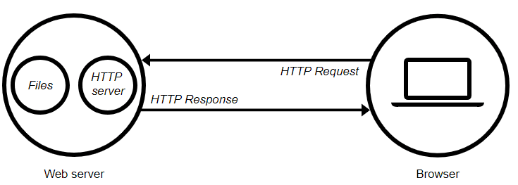

Vamos a hacer un breve resumen a estas tecnologías con la intención de poder asentar algunos conceptos básicos y necesarios para poder desarrollar aplicaciones web de mapas.
HTML. La estructura.
Cuando escribimos la dirección de una página web en nuestro navegador web (ej. Chrome o Firefox), se realiza una petición de datos a un servidor donde se encuentra alojada la página usando un conjunto de protocolos (TCP/IP y HTTP). Si la petición se realiza de forma correcta, el servidor nos responderá enviando paquetes de archivos entre los que se encuentra código y ficheros que nuestro navegador (cliente) organizará para mostrarnos el resultado en pantalla.
Dentro de estos archivos se encuentra principalmente código HTML que definirá la estructura de la página web. A continuación, se aplicará el estilo y la apariencia gracias a CSS. Y, para terminar, toda la funcionalidad y dinamismo de la página será posible gracias a JavaScript. El Lenguaje de Marcado de Hipertexto (HTML) es el código que se utiliza para estructurar y desplegar una página web y sus contenidos. HTML nos provee etiquetas para describir los diferentes tipos de contenidos (elementos) de nuestra web. Gracias a ello, el navegador podrá comprender el contenido enviado por el servidor y representarlo en pantalla.
CSS. Estilo y apariencia.
CSS (Cascading Style Sheets) es un lenguaje de hojas de estilo, es decir, te permite aplicar estilos de manera selectiva a elementos en documentos HTML. Con CSS asignamos fuentes y color a textos o cajas, modificamos tamaños, añadimos imágenes de fondo, definimos márgenes o incluso podemos cambiar completamente la apariencia de un elemento HTML como una lista para convertirla en una barra o menú de navegación. Gracias a CSS también podemos hacer que nuestra página web se vea correctamente en otros dispositivos como móviles o tabletas. Es lo que se conoce como diseño web adaptativo o responsive.
JavaScript. Funcionalidad y dinamismo
JavaScript es un lenguaje de programación del lado del cliente que te permite implementar dinamismo y funcionalidad a nuestra página web. Además del contenido estático, con JavaScript podremos
Mostrar actualizaciones de contenido. Vincular eventos dinámicos a elementos HTML (clic en botones, accesos a menús, filtros en formularios…) Almacenar datos en variables. Usar funciones complementarias como gráficos o mapas mediante APIS de terceros. Acceder a conjuntos de datos públicos o privados.Leaflet u OpenLayers son un par ejemplos de estas APIS de terceros escritas con JavaScript que van a permitir añadir estas funciones de visualización y consulta de datos geolocalizados. Pero existen muchas otras librerías que permitirán, por ejemplo, ver datos en 3D o añadir cuadros con gráficos estáticos.